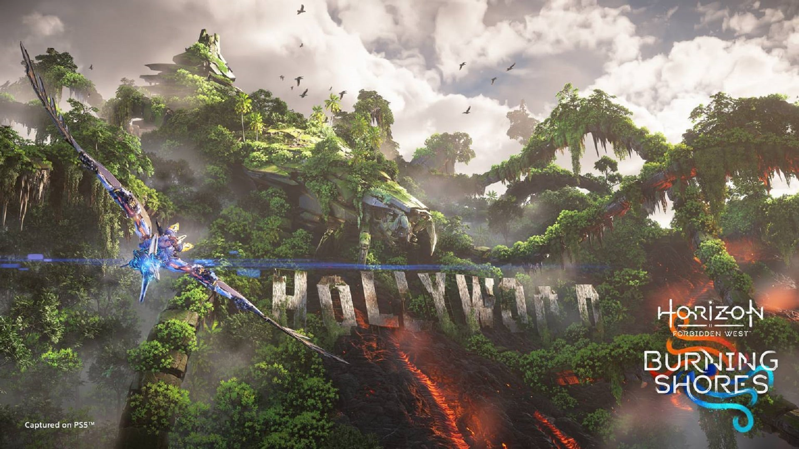
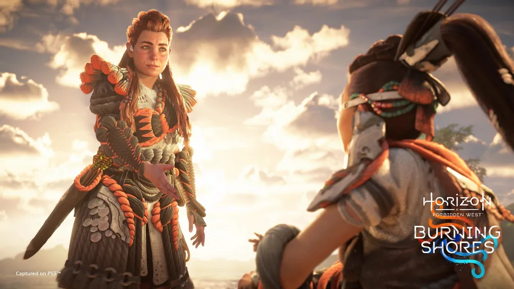
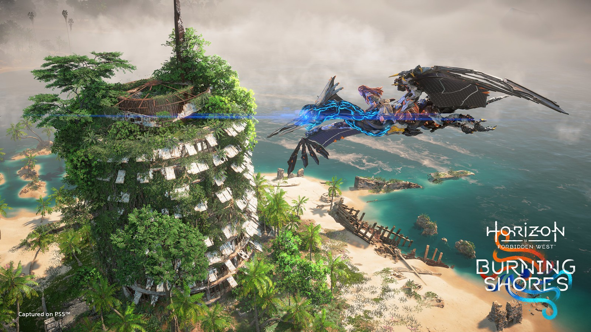
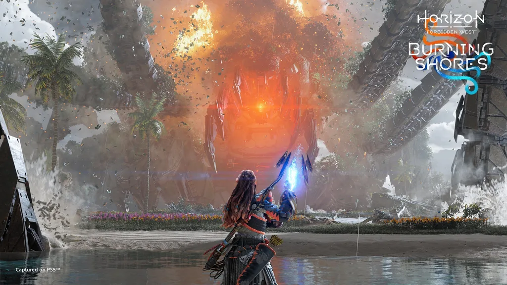
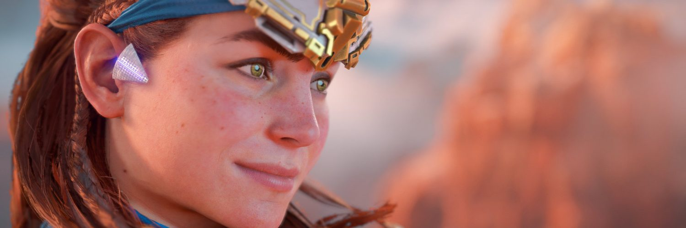

Asciende sobre nuestra ruina
Viaja más allá de Forbidden West mientras continúa la historia de Aloy. Conoce nuevas máquinas y una atrapante historia nueva.Al sur de las Tierras del Clan Tenakth, milenios de erupciones volcánicas y violenta actividad sísmica han tallado las ruinas de Los Ángeles en un archipiélago traicionero.
Vive el siguiente capítulo de Horizon Forbidden West en el que Aloy persigue una nueva y siniestra amenaza para el planeta, escondida en estas peligrosas tierras salvajes.
El DLC de Burning Shores trae contenido adicional para Horizon Forbidden West, incluidos nuevos personajes y experiencias en una zona impresionante, pero llena de peligros.
Para entrar en Burning Shores, debes completar la misión principal (incluyendo Singularidad) en la versión de PS5 de Horizon Forbidden West. Después de la misión principal, recibirás una llamada en el Foco de Aloy, y así comienza el DLC.
Trailer del juego:
Imagenes




